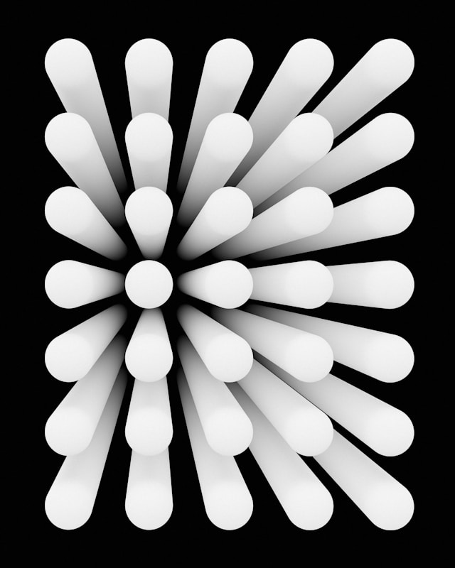

One
This is a description of a skill or service that I plan to advertise soon.Two
This is a description of a skill or service that I plan to advertise soon.Three
This is a description of a skill or service that I plan to advertise soon.Four
This is a description of a skill or service that I plan to advertise soon.